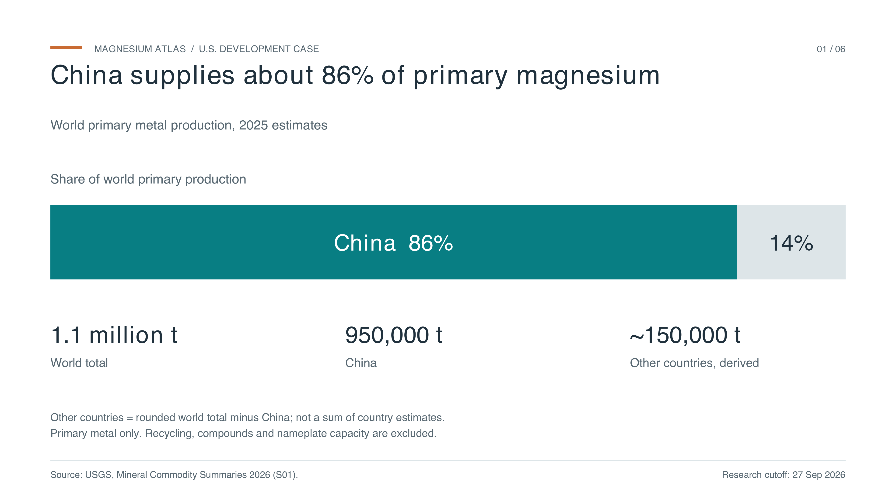
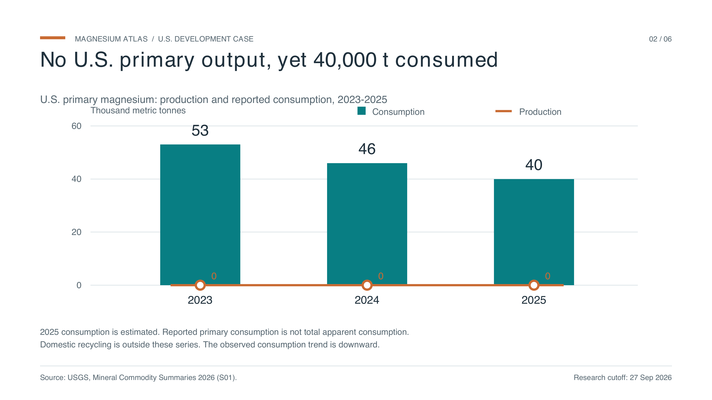
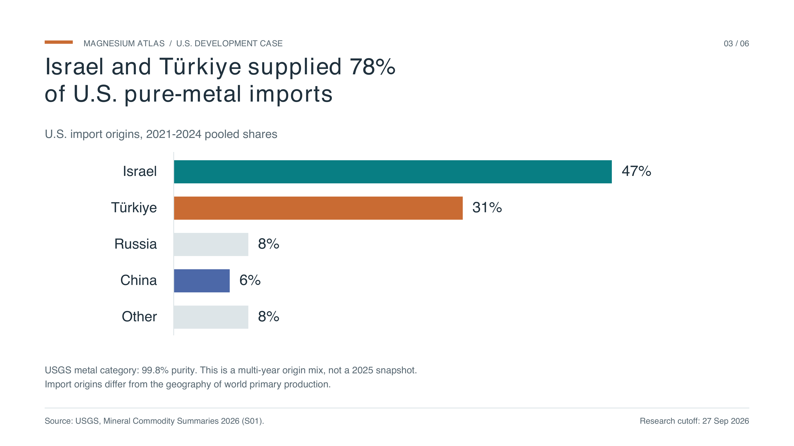
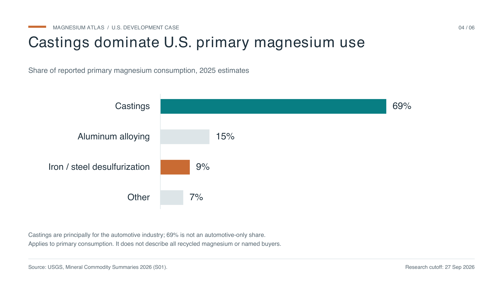
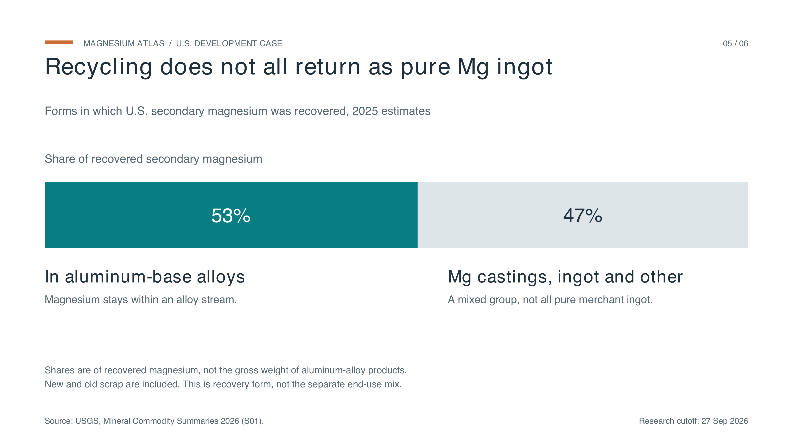
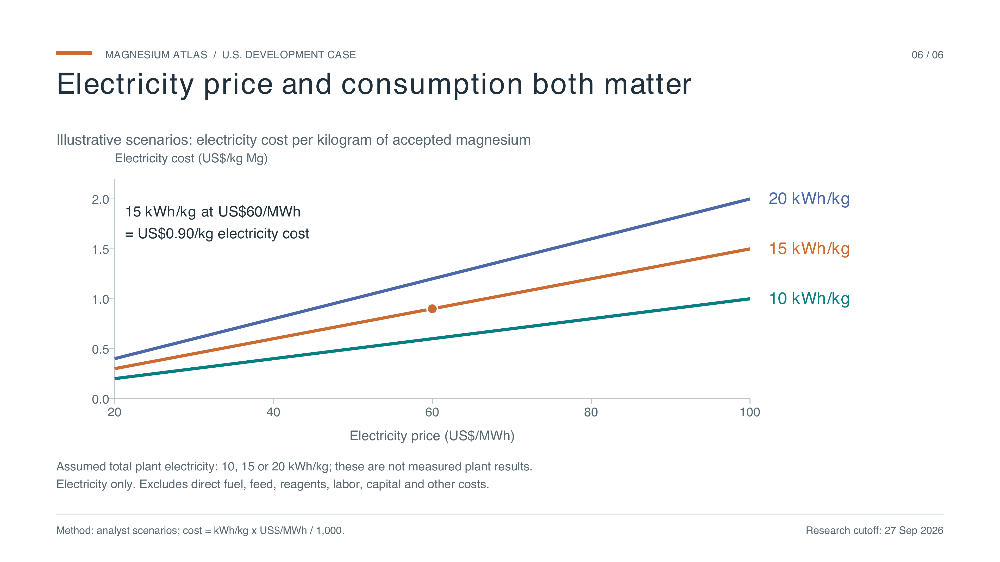

Six figures / 16:9 / Version 1
Charts for your slideshow
A visual argument for domestic magnesium development: supply, markets, recycling and the electricity-cost question.
Download all charts and data (ZIP) ↓ Six-page slide PDF ↗ Version and methods
Use PNG for easy insertion into a slideshow, or SVG for scalable vector artwork. Each image is 16:9 (3840 × 2160 px) with its reporting period and source note. Keep those notes visible when presenting. Five charts use USGS statistics; the electricity chart uses explicitly assumed scenarios.
01 / Source-based statistics
China supplies about 86% of primary magnesium

PNG image ↓SVG vector ↓Plotted data CSV ↓


Source: S01
02 / Source-based statistics
No U.S. primary output, yet 40,000 t consumed

PNG image ↓SVG vector ↓Plotted data CSV ↓


Source: S01
03 / Source-based statistics
Israel and Türkiye supplied 78% of U.S. pure-metal imports

PNG image ↓SVG vector ↓Plotted data CSV ↓


Source: S01
04 / Source-based statistics
Castings dominate U.S. primary magnesium use

PNG image ↓SVG vector ↓Plotted data CSV ↓


Source: S01
05 / Source-based statistics
Recycling does not all return as pure Mg ingot

PNG image ↓SVG vector ↓Plotted data CSV ↓


Source: S01
06 / Illustrative scenario
Electricity price and consumption both matter

PNG image ↓SVG vector ↓Plotted data CSV ↓


Analyst calculation: kWh/kg × US$/MWh ÷ 1,000 = US$/kg electricity cost. Inputs are assumptions, not measured plant values.